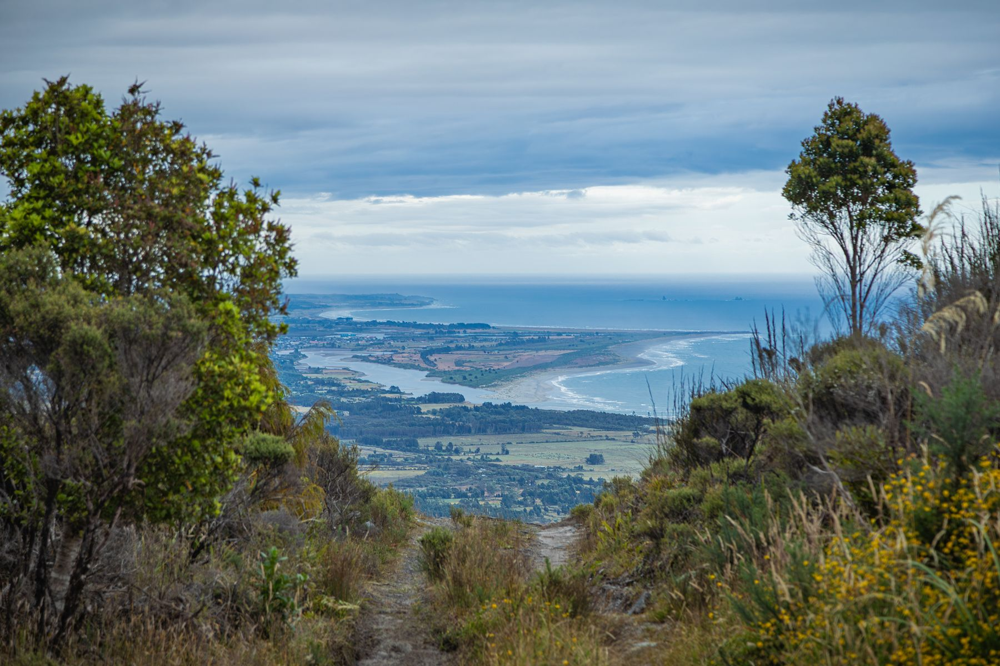
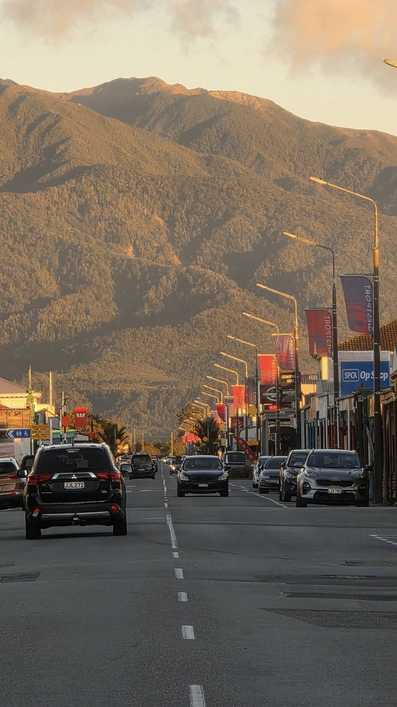
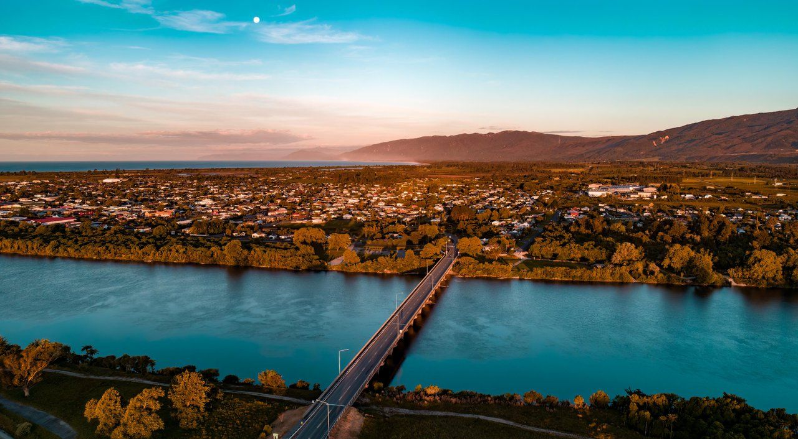
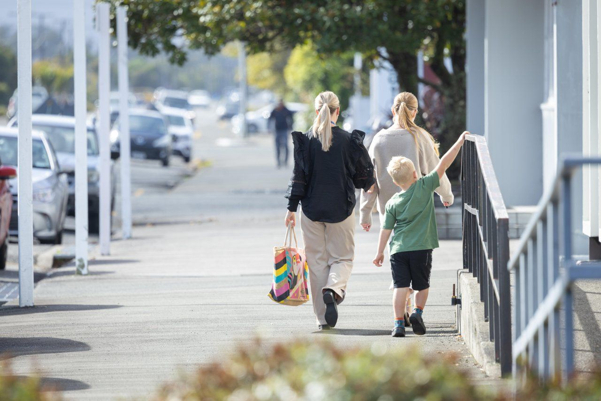
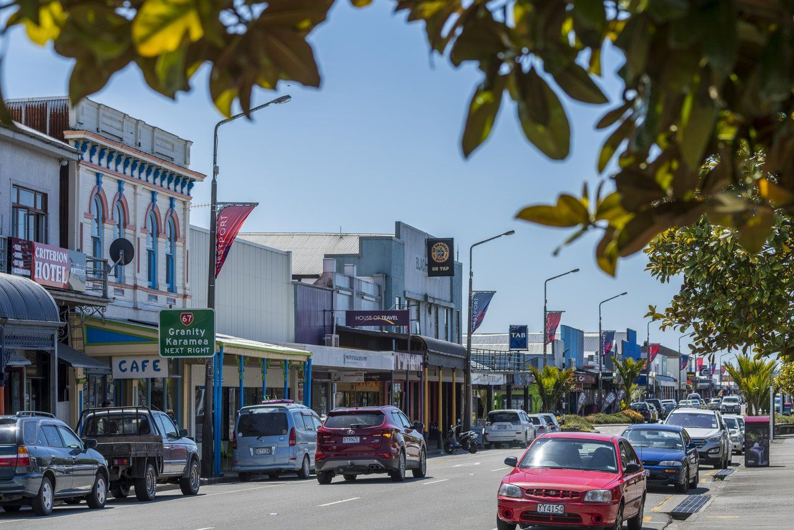
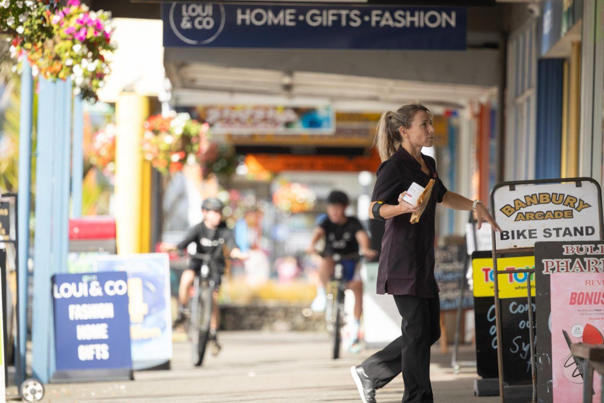
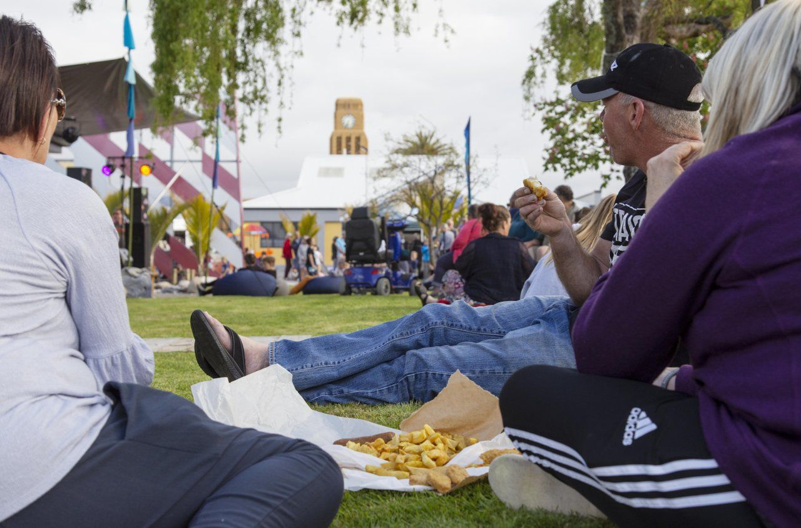
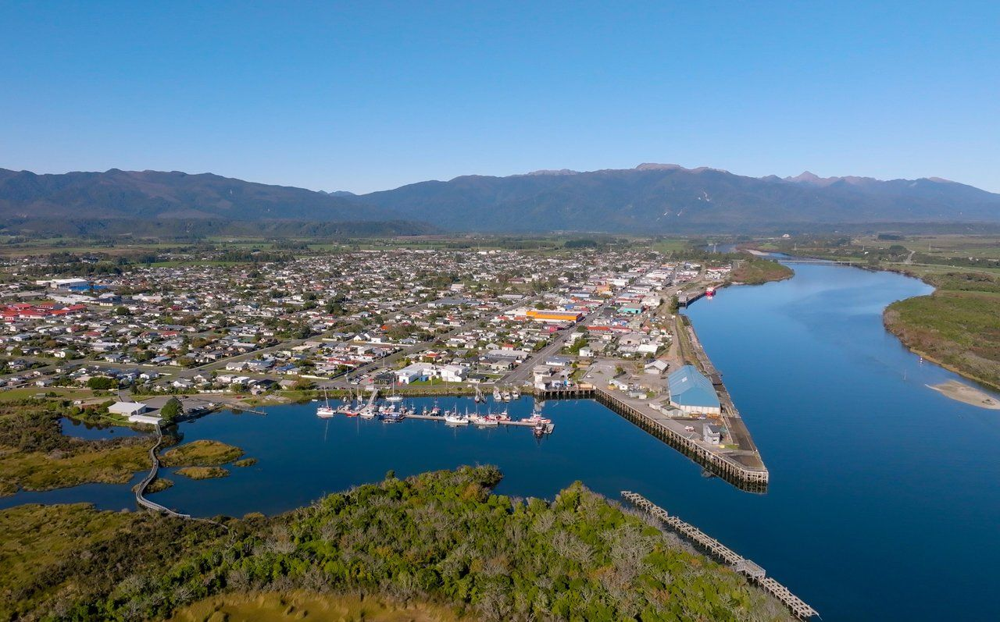
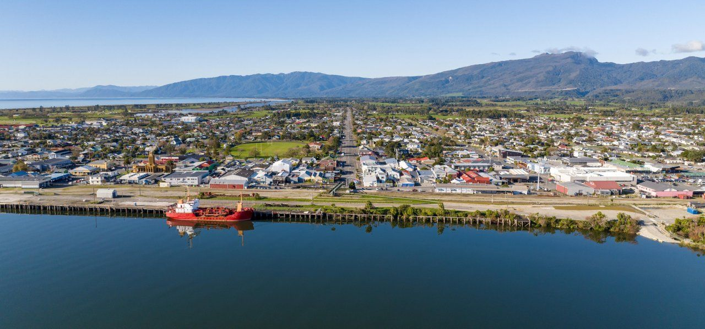
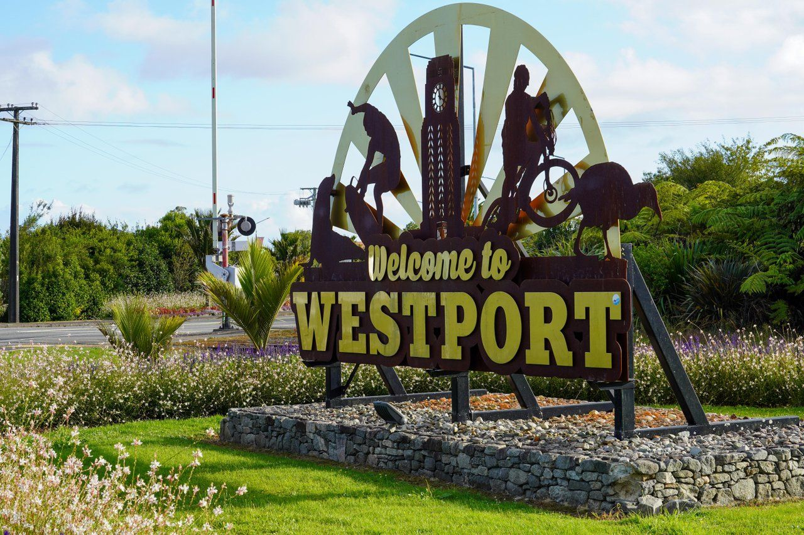

An open letter
Supporting the Buller Plateaux Continuation Project (Stockton Mine). Add your name below.
New Zealanders go to the polls on 7 November 2026. Before we vote, we ask every party, and every candidate standing in West Coast-Tasman, to tell the people of Buller where they stand on this project and on the economic future of this district.
Our position is set out below.
Supporting the Buller Plateaux Continuation Project (Stockton Mine)
We are members and supporters of the Buller community who believe in the future of our District. We support the Buller Plateaux Continuation Project because of its profound importance for our people, our community, our infrastructure and our future.
We recognise that mining has environmental impacts and that people will hold different views about those impacts. Our support is not based on a belief that mining should proceed at any cost. Rather, we believe this particular project is profoundly important to the economic and social wellbeing of Buller, the wider West Coast and the people who call this place home.
We want the voices of those who support the continuation of Stockton Mine to be heard and taken into account.
We ask that the fast track approvals panel, any other decision makers, and the House of Representatives, support the Buller Plateaux Continuation Project proceeding through the Fast-Track Approvals process and recognise its significant economic and social importance to Buller, the wider West Coast and New Zealand. The reasons why:
Anyone can sign: Buller residents, business owners, people who work here, people who used to live here, and supporters from anywhere in New Zealand.
Prefer pen and paper? Signature sheets are available and will be distributed to participating businesses and individuals for collecting signatures. Contact us if you would like some.
Having trouble with the form? Open it in a new tab.









We are a group of Buller residents. We are not an organisation, a company or a political party. We put this letter together because we live here, we work here, and we want the people making this decision to hear from the people it affects.
Anyone who signs this letter is speaking for themselves. So are we.
This is an open letter. When you add your name, you are signing it.
Your name, town and connection to Buller will be provided to the decision makers this letter is addressed to. That may include the fast-track expert panel, government Ministers and Members of Parliament.
This applies whether you sign online or on a paper sheet. Both are held together as one signature list.
The full signature list may be provided to Parliament and to the fast-track expert panel so that the signatures can be verified if we are asked to prove them. That is why we ask for a real name and a working email address for every signature, and why we check for duplicates before we publish any number.
Your email address is never published, and it is not part of what we send to decision makers. We hold it so we can confirm signatures are genuine and contact you if you ask us to. If a decision maker asks us to prove the signatures are real, we may need to provide it.
We do not publish signatories' names on this website. Your signature is counted, and your name goes to the decision makers.
Businesses are the one exception. If you sign on behalf of a business and tell us on the form that we may, we will list your business name on this page as a signatory.
We may also publish a small selection of the comments people leave, but only where the person has given permission on the form, and only in the form they chose: with their name, or without it.
We will ask that your details be treated in confidence. We cannot guarantee it. Documents provided to Parliament or to a government agency can become part of a public record, or be released under the Official Information Act.
Signatures are collected by Our Buller Future. Questions? Contact us.
All photographs were sourced from the West Coast Image Library unless otherwise stated.
Questions, or want signature sheets to collect on paper? Send us a message and one of the organisers will get back to you.